How AI changes tone, structure, and visual style—and why thoughtful revision still matters.
Shichao PeiAssistant Professor, Computer ScienceUMass Boston
Course roadmap
02 / 93
Three sections · ten modules
What we’ll explore
We will recognize style, examine the technologies that control transformation, and learn how to evaluate an edited result.
Section 1
Understanding style
01What is style?
02Style ingredients
03Style detective
Section 2
Transformation technologies
04Conditional generation
05Examples & variation
06Meaning preservation
07Neural style transfer
08Image controls
Section 3
Creative direction
09Multimodal alignment
10Revision & evaluation
A bridge across three days
03 / 93
Prediction can produce many possible expressions
The model continues from context. Change the context, and a different—but still plausible—result may appear.
Day 1 · Language
Predict the next token
Text emerges one continuation at a time.
context → likely words
Days 2–3 · Images
Predict useful visual change
Images emerge or transform through guided denoising.
condition → visual direction
Module 1
04 / 93
Before we transform a style
What is style?
Style is the pattern of choices that shapes how an idea looks, sounds, and feels.
1
Meaning is not the whole message
05 / 93
Style changes expectations before the content is revealed.
Same gift · different presentation
The core can stay while the experience changes
Each box can hold the same object, yet its wrapping suggests a different relationship, mood, and occasion.
Content = what is inside · Style = how it is presented
Content versus style
06 / 93
Keep the core. Change the experience.
A successful transformation knows which choices may move and which information must stay.
Content
The message and facts
Who, what, where, why, and the key relationships.
A storm is approaching the town.
Style
The way it is expressed
Tone, vocabulary, rhythm, imagery, color, texture, and form.
urgent · calm · cinematic · playful
One speaker · several voices
07 / 93
Tone can be seen as well as heard
The same idea can feel completely different
Formal, friendly, humorous, and suspenseful styles use different signals—even before we examine individual words.
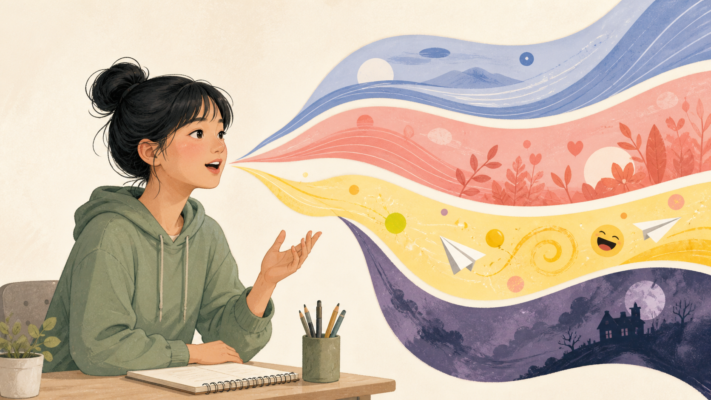
Style changes our expectations
08 / 93
The reader reacts to the pattern
A message can create trust, energy, distance, or emotion
The same reader responds differently as visual rhythm, color, and emotional cues change around the message.
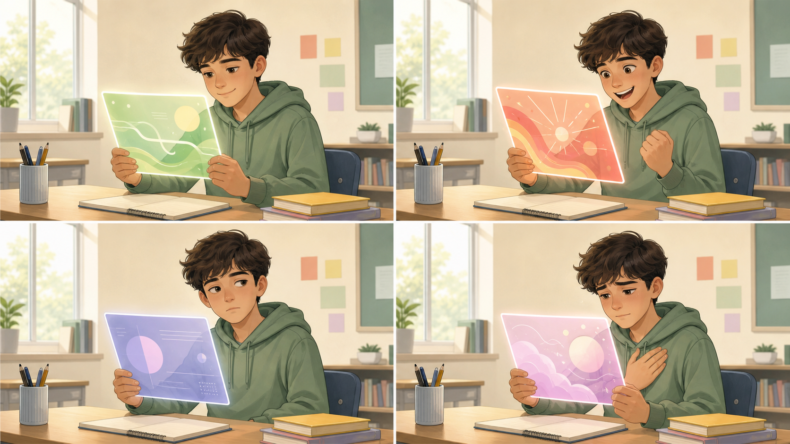
Class activity · instant reactions
09 / 93
One fact · four voices
Which version fits the moment?
The information stays fixed. The speaker changes the relationship with the audience.
Core messageThe science lab will close at 4:00 p.m. today.
Principal
“Please note that the science lab will close at 4:00 p.m. today.”
Close friend
“Quick heads-up—the science lab closes at 4 today!”
Sports commentator
“The clock is ticking—the lab doors close at four!”
Movie narrator
“As four o’clock approaches, the science lab prepares to close.”
Vote first. Then explain: Which version is clearest, most trustworthy, most energetic, and most dramatic?What stayed the same? Which words changed the feeling?
Module 2
10 / 93
Style is made from many small decisions
The ingredients of style
No single setting creates a complete style. Words, rhythm, color, texture, and structure work together.
2
Ingredient 1 · word choice
11 / 93
Ask → request → demand → beg
Similar meanings can carry different intensity
The ball stays the same. Gesture, posture, and urgency reveal how four related verbs can change the emotional force of a scene.
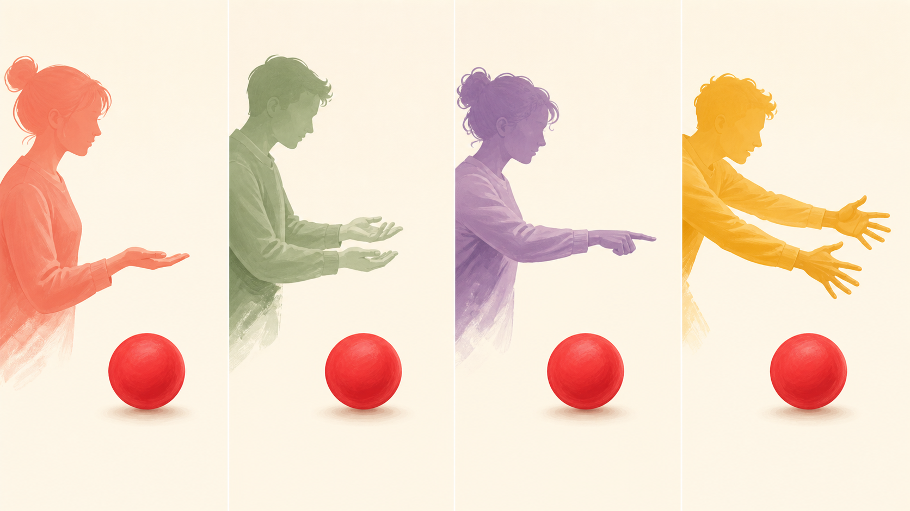
Ingredient 2 · sentence length
12 / 93
Two paths carry one idea
Length controls speed, detail, and rhythm
The short path arrives quickly. The longer path adds turns, details, and a deliberate pause before reaching the same destination.
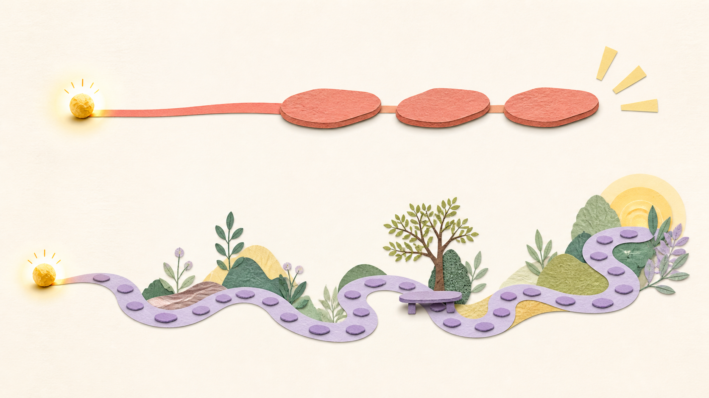
Ingredient 3 · rhythm
13 / 93
Language has a pulse
Steady → surprising
Repeated patterns can feel calm and controlled. A sudden break can create humor, tension, or emphasis.
regularvaried
Good style often combines repetition with deliberate change.
Ingredient 4 · tone
14 / 93
Same person · same envelope
Tone is the attitude carried by the message
Expression, posture, color, and light make one delivery feel warm and encouraging while another feels calm and serious.
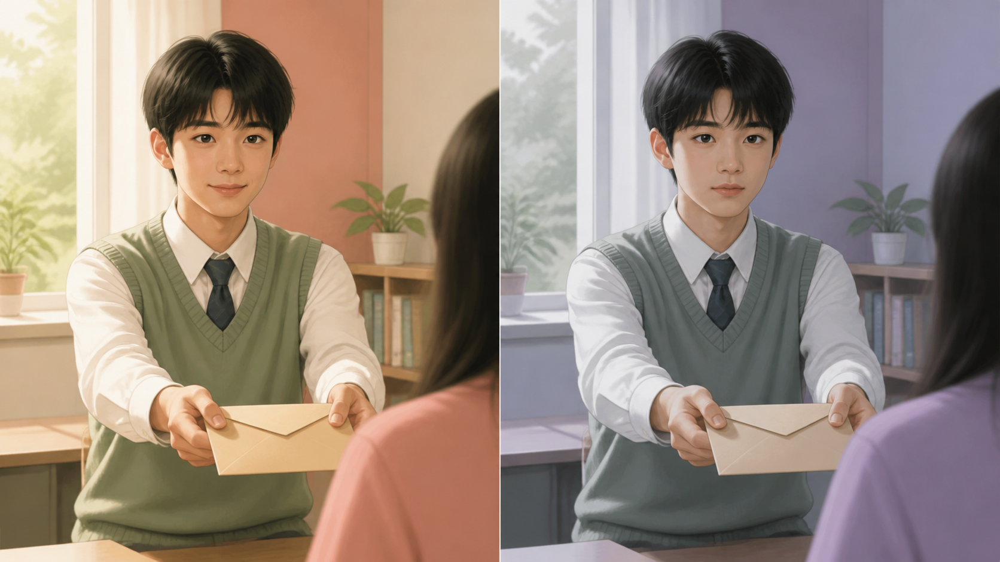
Ingredient 5 · formality
15 / 93
One student · two social settings
Audience and occasion reshape the presentation
Casual conversation and a scholarship interview call for different posture, clothing, vocabulary, and structure.
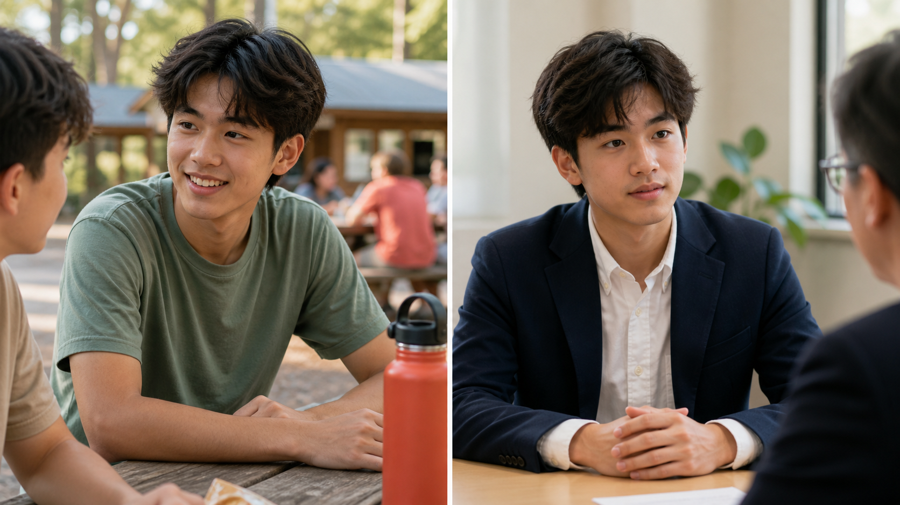
Visual style has ingredients too
16 / 93
Same room · one dominant change
Palette, lighting, texture, and shape guide the mood
The furniture remains nearly fixed, but a change in one visual system can reshape the feeling of the whole scene.
Visual style toolkit
17 / 93
Images communicate through coordinated choices
These ingredients interact; changing one can affect how the others are perceived.
01
Palette
The range and relationship of colors.
02
Lighting
Direction, softness, contrast, and time of day.
03
Texture
Smooth, grainy, painted, cut paper, or photographic.
04
Shape
Rounded, angular, realistic, simplified, or geometric.
Class activity · style fingerprint
18 / 93
Describe before you judge
Build a style profile
Study both samples. Name four choices that create their distinctive feeling.
Text sample
“Rain tapped the window. Maya folded the map twice and waited.”
Look forword choice · sentence length · rhythm · tone
Build two four-part profiles. Circle the strongest clue. Underline the easiest ingredient to change.A specific description gives us more control than “make it cool.”
Module 3
19 / 93
Observation comes before transformation
Become a style detective
Strong creators notice patterns, explain their evidence, and separate personal taste from useful description.
3
Four detective questions
20 / 93
Look for repeated choices—not one isolated clue
A style appears through a pattern across the whole piece.
01
What repeats?
Words, colors, shapes, sentence structures, or textures.
02
What stands out?
A surprising contrast, pause, angle, or detail.
03
How does it feel?
Calm, playful, urgent, distant, warm, or strange.
04
Who is it for?
The audience helps explain many style choices.
Two descriptions · one storm
21 / 93
News update vs. suspense scene
Evidence reveals the voice
The coast and storm remain the same. Viewpoint, contrast, color, and visual rhythm redirect attention toward information or tension.
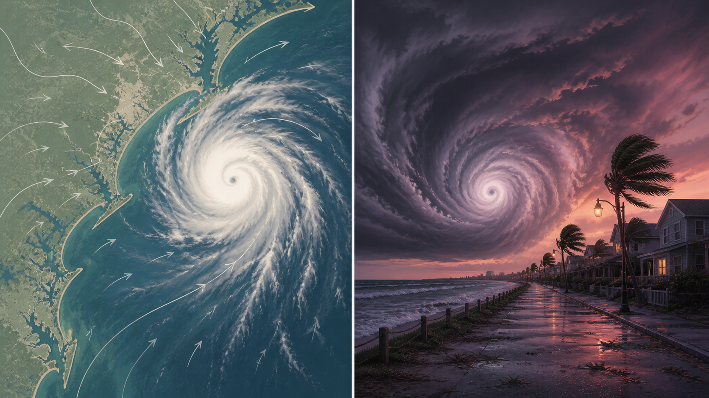
Visual detective challenge
22 / 93
One sneaker · four treatments
What changed—and what stayed recognizable?
Compare palette, texture, detail, edge quality, and shape. Then identify the content that remains stable across all four versions.
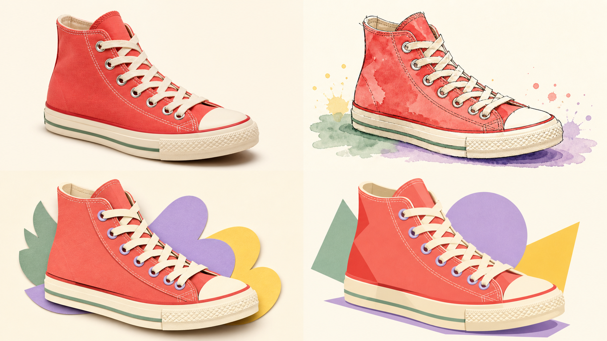
Audience fit
23 / 93
Same experiment · different purpose
A style works when it serves the audience
Safety instructions prioritize orderly steps and clarity. A festival treatment uses energy and contrast to attract attention.
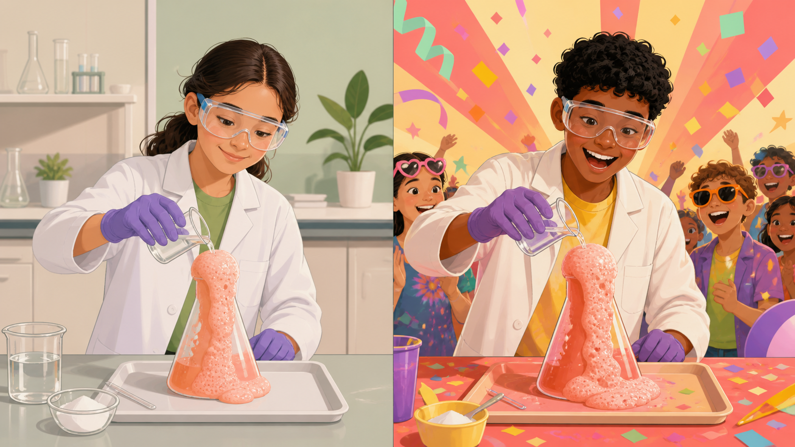
Class challenge · name that style
24 / 93
Claim + evidence
Do not stop at “I like it”
Choose one composition. Describe how scale, placement, angle, and negative space shape its feeling.
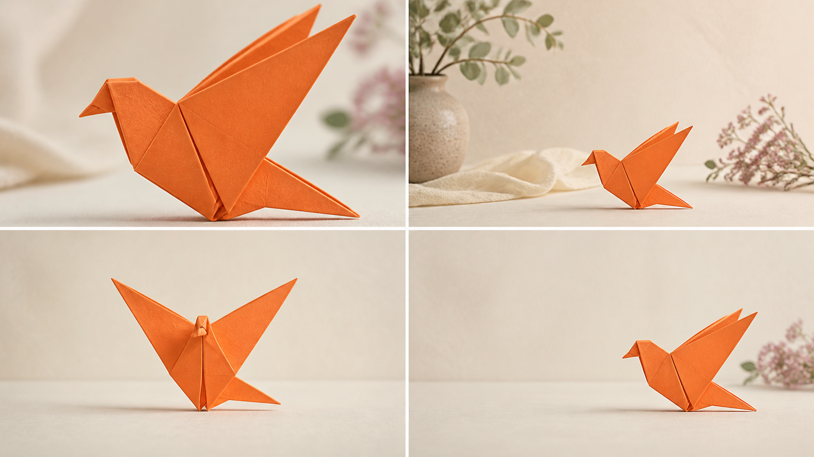
ABCD
Your challenge
Which composition feels most dramatic?
ClaimPanel __ feels...
EvidenceThe bird appears...
EvidenceThe negative space...
PurposeThis could work for...
Strong answer = mood + two visible clues + audience and purpose
Section 1 recap
25 / 93
Our transformation target is now clearer
Style is a coordinated pattern of choices.
Text and images both use ingredients. We can recognize those ingredients, describe them, and decide which ones should change.
Observe → describe → transform
Module 4
26 / 93
Generation follows more than a source
Conditional generation
Audience, tone, purpose, examples, and constraints change which continuation the model treats as appropriate.
4
Conditions reshape possibilities
27 / 93
The model receives a situation, not a style switch
Change the context, and different patterns become more likely.
A formal audience favors different vocabulary and structure than a playful audience, even when the factual source stays fixed.
Conditioning guides—it does not guarantee
A transformation pipeline
28 / 93
The source is only one part of the input
Style transformation works best when the model can distinguish the protected core from the requested presentation.
01
Source
The facts or visual content to preserve.
→
02
Audience
Who will receive the result.
→
03
Style condition
Tone, medium, rhythm, or mood.
→
04
Constraints
What must stay or must not appear.
→
05
Candidate
One possible transformed output.
Audience is a condition
29 / 93
The same meteorite needs two explanations
The object does not change. The useful level of detail and vocabulary do.
Younger learner
Begin with the big idea
Concrete comparisons and familiar words make the concept approachable.
Specialist
Expose the evidence
Measurements, uncertainty, and technical terms support deeper analysis.
Four common conditions
30 / 93
Good directions answer the questions that matter
Adding every possible adjective can create conflict. Choose conditions that serve a real decision.
01
Audience
Who is this for?
02
Purpose
What should they understand or do?
03
Style
How should the result feel and sound?
04
Format
What structure should organize it?
Constraints protect the task
31 / 93
Positive and negative directions do different jobs
A useful condition can request a feature or prevent an unwanted change.
Include
Use a calm, encouraging voice
Positive conditions describe the desired target.
Protect
Do not change dates or quantities
Guardrails identify information that must remain stable.
Model behavior remains probabilistic
32 / 93
A condition shifts the field—it does not lock one answer
Two valid outputs can follow the same instruction.
Variation is useful for brainstorming, but important communication still needs comparison, verification, and revision.
Guidance ≠ certainty
A visual metaphor for conditioning
33 / 93
Same origin. Different conditional paths.
One seed · four guided paths
The same origin can support several appropriate styles
Different guiding signals encourage geometric, friendly, playful, or mysterious patterns while the shared origin remains visible.
The condition changes direction—not the existence of the seed.
Module 4 recap
34 / 93
Protect the core. Direct the target.
The clearer that boundary becomes, the easier the result is to evaluate.
01
Protect
Name the meaning or identity that must remain.
02
Direct
Name audience, purpose, style, and format.
03
Inspect
Treat the output as a candidate, not a guarantee.
Module 5
35 / 93
Examples can teach a pattern inside the prompt
Style examples & variation
Zero-shot, one-shot, and few-shot guidance offer different amounts of evidence about the desired style.
5
In-context learning
36 / 93
Examples can demonstrate the transformation
The model uses patterns present in the current context; it does not permanently retrain from your three examples.
01
Zero-shot
Describe the target style with words only.
02
One-shot
Provide one source-to-target example.
03
Few-shot
Provide several consistent examples.
Zero-shot → one-shot → few-shot
37 / 93
More examples reveal a clearer pattern
Demonstrations can stabilize a style
The paper airplane keeps its role while additional examples make color, shape, and surface patterns easier to infer.
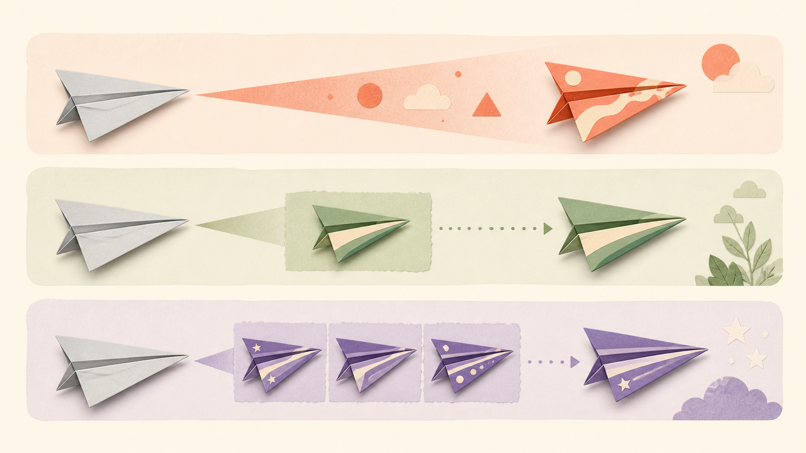
Examples are evidence—not a script
38 / 93
The goal is to infer shared choices
A useful example teaches a pattern without demanding a copy.
Consistent examples reveal vocabulary, rhythm, detail level, palette, or texture that a short label such as “friendly” might leave ambiguous.
The model may blend conflicting signals when demonstrations disagree.
Coherent set
Shared tone and structure
Each example reinforces the same transformation pattern.
Conflicting set
Different tones and purposes
The desired pattern becomes harder to identify.
Step 1 · The model proposes possibilities
40 / 93
Several next words can be plausible
A decoding strategy decides how to choose among the probabilities—not what the prompt is asking for.
55%
quietly
The highest-probability continuation.
25%
slowly
Plausible, but less strongly predicted.
15%
carefully
Another meaningful candidate.
5%
dramatically
Less likely, but still possible.
Step 2 · Search strategies
41 / 93
Greedy keeps one path; beam keeps several
Both favor high-probability sequences. The difference is how many unfinished answers survive each step.
Greedy decoding
Choose the best next token
At every step, keep only the highest-probability continuation. It is fast and consistent, but an early choice cannot be reconsidered.
1 path → 1 path → result
Beam search
Compare several partial sequences
Keep a small beam of strong continuations, expand each one, then prune back to the best few. Finally, choose the strongest completed sequence.
3 paths → expand → keep 3
Step 3 · Sampling strategies
42 / 93
Temperature changes odds; top-p limits choices
They are often combined: one reshapes the probability gaps, while the other defines the candidate pool.
Temperature
Sharpen or flatten the probabilities
Low temperature makes likely tokens dominate. High temperature gives less-likely tokens a better chance before the system samples one.
low = steadier · high = more varied
Top-p sampling
Build a flexible candidate pool
Sort tokens by probability, keep the smallest group whose total reaches p, then sample from that group. The pool changes at every step.
p = 0.90 → 55% + 25% + 15%
Module 5 recap
43 / 93
Examples and decoding shape different parts of behavior
Use examples to clarify a pattern and variation controls to choose how widely to explore.
01
Show
Provide consistent demonstrations when labels are vague.
02
Explore
Adjust variation to match brainstorming or precision.
03
Compare
Evaluate candidates against the same rubric.
Module 6
44 / 93
A stylish rewrite can still be wrong
Meaning preservation
Semantic representations can help compare meaning, but careful human checking remains essential.
6
Two layers of a transformation
45 / 93
Protect the content core; redesign the style layer
The boundary is conceptual, but it gives us a practical review method.
Content core
Entities, facts, relationships
Who, what, when, how much, and how ideas connect.
Style layer
Vocabulary, rhythm, format
How the same meaning is organized and experienced.
Semantic similarity · high-level view
46 / 93
A map of meaning relationships
Different wording can remain nearby in meaning
Paraphrases may occupy nearby regions, while a changed fact can move the representation farther away.
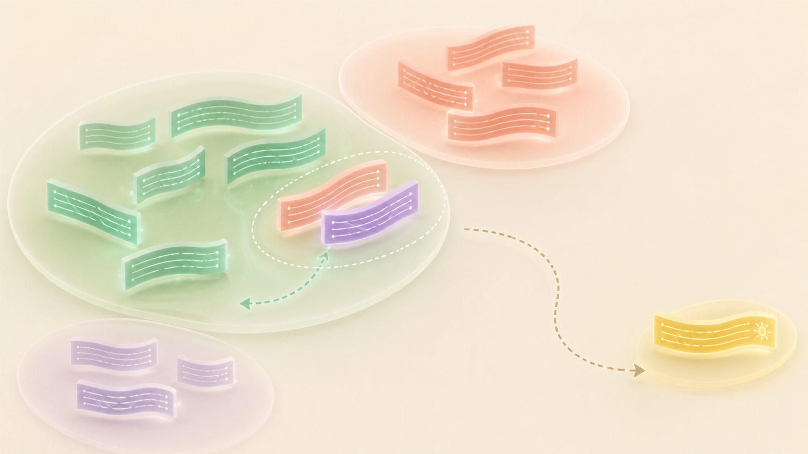
Four common forms of drift
47 / 93
Fluent language can hide important changes
Check these categories explicitly after every transformation.
01
Entity drift
A person, place, or object changes.
02
Number drift
A quantity, date, or comparison changes.
03
Causal drift
A new reason or result is invented.
04
Certainty drift
“Might” quietly becomes “will.”
A semantic checking pipeline
48 / 93
Compare meaning before polishing the style
Similarity can flag a possible problem, then a person examines the exact source and rewrite.
01
Original
Represent the source meaning.
→
02
Rewrite
Represent the transformed meaning.
→
03
Compare
Estimate how closely they align.
→
04
Audit
Inspect entities, numbers, causes, and certainty.
Similarity has limits
49 / 93
Nearby representations do not prove factual identity
A numerical comparison is useful evidence, not a complete fact-check.
Helpful
Find major meaning shifts
Large semantic changes can trigger closer review.
Insufficient
Catch every small factual error
One changed date or name may matter greatly even when most wording remains similar.
Module 6 recap
50 / 93
Meaning preservation needs two kinds of evidence
Automated comparison helps us look; close reading helps us decide.
01
Represent
Compare semantic relationships at a high level.
02
Verify
Check exact facts and relationships.
03
Revise
Repair drift without losing the target style.
Module 7
51 / 93
A classic technique separates two visual goals
Neural style transfer
Content features protect recognizable structure while style features guide texture, color, and repeated visual patterns.
7
The classic style-transfer idea
52 / 93
Content image + style reference → combined result
Structure and surface patterns can come from different images
The bicycle and greenhouse provide content; botanical watercolor textures provide style; the result balances both.
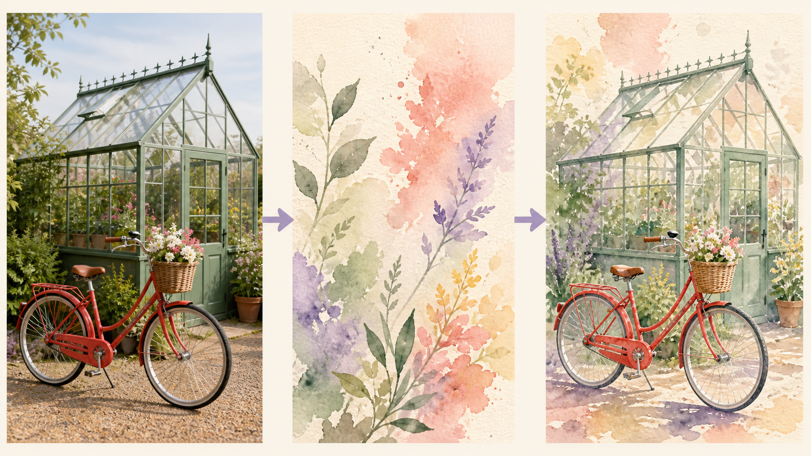
Two feature goals
53 / 93
Content and style are measured differently
This is a simplified conceptual view of the classic method.
Content features
Where structures appear
Larger shapes, object arrangement, and recognizable parts.
Style features
How patterns behave
Texture, brushwork, color relationships, and repeated motifs.
Inside classic style transfer
54 / 93
Image → patterns → relationship map
A Gram matrix acts like a pattern summary
The network first notices visual ingredients such as curves, colors, dots, and brush textures. The grid summarizes which ingredients often appear together—not exactly where they appear.
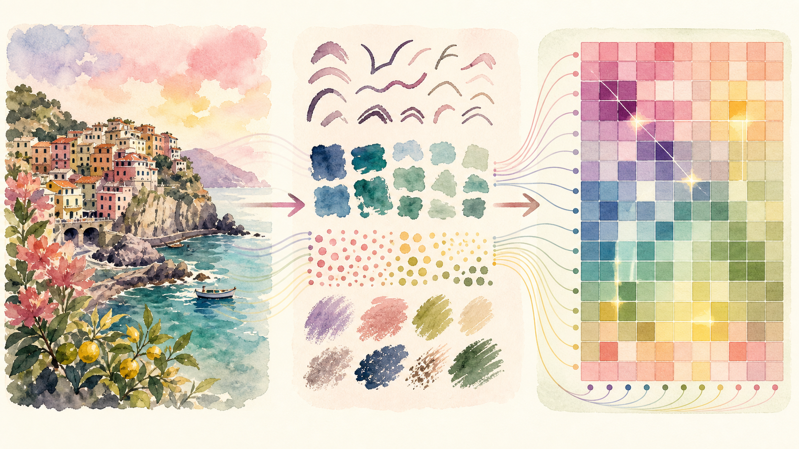
The image is adjusted repeatedly
55 / 93
Two goals pull the result toward a balance
The system compares the current result with both sources and updates it to reduce the combined mismatch.
01
Start
Begin with an image to adjust.
→
02
Check content
Is the structure still recognizable?
→
03
Check style
Do the visual patterns match?
→
04
Update
Change pixels and repeat.
Two scores guide every update
56 / 93
The model repeatedly asks two simple questions
A loss is just a mismatch score: smaller means the candidate is closer to the goal. The system balances a content score and a style score.
Content score
Does the subject still look right?
This score checks whether important objects and their arrangement remain recognizable.
Style score
Do the visual patterns match?
This score checks whether texture, color relationships, and repeated patterns resemble the reference.
The weights create a trade-off
57 / 93
What should the result prioritize?
Content fidelity → style intensity
More content weight protects geometry. More style weight strengthens texture and palette but can distort the subject.
structuresurface
A successful balance depends on the communication goal, not on one universal setting.
One subject · several visual systems
58 / 93
Edges, texture, detail, and shape all move
Style strength changes more than color
Photography, watercolor, paper cut, and geometric poster treatments rebuild the same fox using different visual rules.
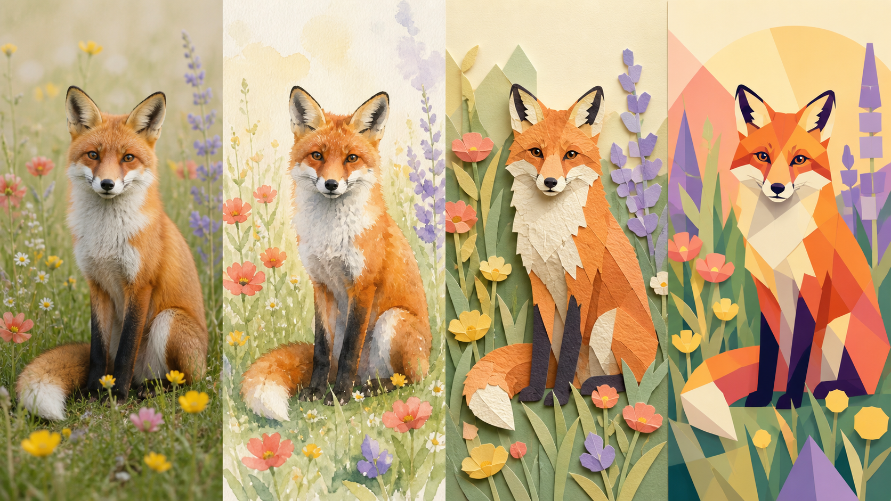
Classic versus modern transformation
59 / 93
The control interface changed—even if the goal feels familiar
We only need a short bridge to Day 2; the denoising mechanism was covered there.
Classic style transfer
Content image + style image
Feature-based objectives combine structure and visual statistics.
Modern image editing
Source + text or reference conditions
Diffusion editors can respond to language, masks, structure, and adapters.
Module 7 recap
60 / 93
Style transfer is a balancing problem
The useful question is not “Did it become artistic?” but “Which content survived, and which style features changed?”
01
Content
Protect recognizable structure.
02
Style
Transfer coordinated visual patterns.
03
Balance
Judge the result against the purpose.
Module 8
61 / 93
Prompts are only one control surface
Controlled image transformation
Masks, structural guides, reference images, and small adapters can control different parts of a transformation.
8
SDEdit · Stochastic Differential Editing
62 / 93
SDEdit edits an image by adding noise, then rebuilding it
Instead of starting from pure noise, SDEdit starts with an existing image. It partially hides that image with noise, then lets a diffusion model rebuild a realistic version under new guidance.
01
Source image
Begin with a photo, sketch, collage, or other visual guide.
→
02
Add noise
Partially hide details while keeping some of the original structure.
→
03
Guided denoising
Use the model’s learned image patterns—and optionally a prompt—to rebuild the image.
→
04
Edited result
Balance faithfulness to the source with realism and creative change.
SDEdit · image-to-image strength
63 / 93
Same source · two noise levels
Less noise preserves; more noise transforms
A little static leaves the fox easy to recover. More static gives the model freedom to rebuild it with a stronger new visual style. The starting noise level becomes the edit-strength control.
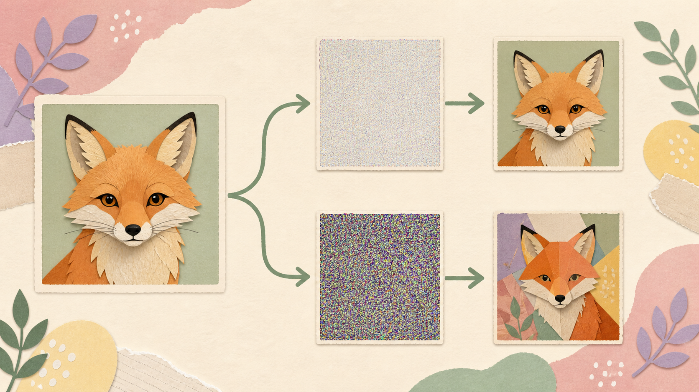
Masking and inpainting · definitions
64 / 93
A mask says where; inpainting decides what appears there
The two terms work together, but they describe different parts of the editing system.
Mask
A pixel-aligned spatial map
It marks editable and protected areas. Many tools display white as edit and black as protect, although an interface may reverse that convention.
where may change?
Inpainting
A generative filling process
The model uses the prompt, surrounding known pixels, and learned visual patterns to propose plausible content inside the selected region.
what should appear there?
Diffusion inpainting · high-level mechanism
65 / 93
The selected region is rebuilt using context
Implementations vary, but a modern inpainting workflow usually combines a source image, a mask, a prompt, and repeated generative refinement.
01
Prepare inputs
Align the source image, mask M, and text instruction.
→
02
Represent the image
Pixel-space systems work directly; latent systems encode compact visual features.
→
03
Regenerate the target
The model refines candidate content using the prompt and surrounding known region.
→
04
Composite and inspect
Output ≈ M·generated + (1−M)·source. Check edges, light, and geometry.
Masking and inpainting
66 / 93
Select the region allowed to change
A mask creates a local editing boundary
Only the back wall becomes a paper-cut mural. Furniture, window, camera angle, and lighting remain protected.
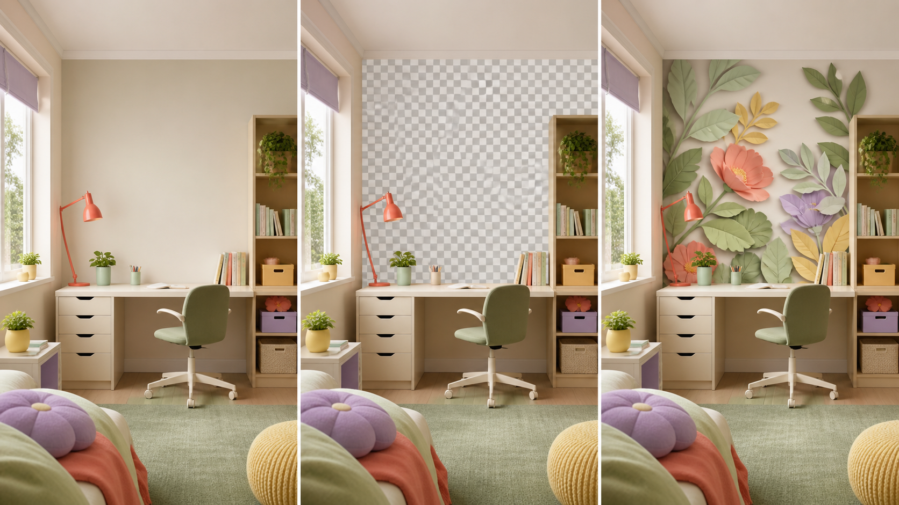
Masks support targeted edits
67 / 93
Local control can be clearer than a longer prompt
A mask answers the spatial question: where may change occur?
01
Replace
Change one object or background region.
02
Remove
Reconstruct the area behind an unwanted object.
03
Restyle
Apply a new surface treatment to one region.
04
Protect
Leave everything outside the mask unchanged.
Mask boundaries need inspection
68 / 93
A local edit still has to join the whole image
The transformed region must agree with surrounding geometry, light, texture, and perspective.
Clean join
Edges and lighting agree
The new region feels like part of the same scene.
Visible seam
Texture or shadow breaks
A technically local edit can still look disconnected.
ControlNet · structural conditioning
69 / 93
Give a diffusion model an extra structure guide
ControlNet keeps the original image generator unchanged and adds a side branch that learns how to follow an edge, pose, or depth map.
01
Structural map
Provide a simple guide showing outlines, body position, or near–far space.
→
02
Control branch
A smaller side path learns how the guide should affect the image.
→
03
Gentle connection
The new path starts with almost no influence, then learns to contribute safely.
→
04
Original model
The main generator keeps the visual knowledge it learned before.
Structural conditioning
70 / 93
Edges · pose · depth
A guide can protect where things belong
The robot changes material and color while edge, joint, or depth information holds its pose and silhouette.
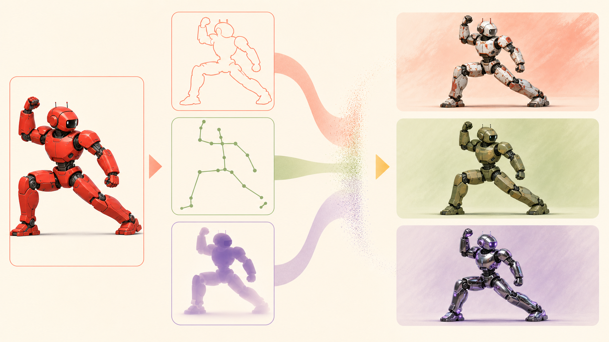
Different guides protect different relationships
71 / 93
Choose the structural signal that matches the task
These simplified examples show why one control cannot solve every preservation problem.
01
Edges
Protect outlines and boundaries.
02
Pose
Protect body or joint arrangement.
03
Depth
Protect near–far spatial relationships.
04
Sketch
Turn a rough layout into a detailed result.
Prompt-to-Prompt · text-based image editing
72 / 93
Reuse word maps to protect the layout
Cross-attention connects prompt words to image regions. The method keeps maps for unchanged words, then regenerates the scene using the edited prompt.
01
Generate
Create a scene from the original prompt.
→
02
Save maps
Record where each word influenced the image.
→
03
Edit words
Replace a word or add a new description.
→
04
Regenerate
Keep stable maps while new words change selected details.
Prompt-to-Prompt · attention control
73 / 93
Change one word · preserve the scene
A word-location map can protect the layout
The animal changes from dog to cat, while the bench, tree, lighting, and camera position remain stable. Reusing attention for unchanged words helps preserve their spatial roles.
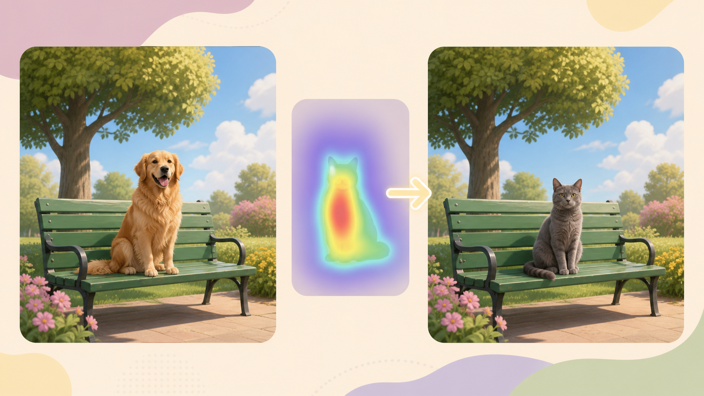
Reference-based conditioning
74 / 93
Source content + visual reference
A reference image can supply style evidence
The fox supplies identity and pose. The separate board supplies paper texture, geometry, and palette. The result combines selected qualities.
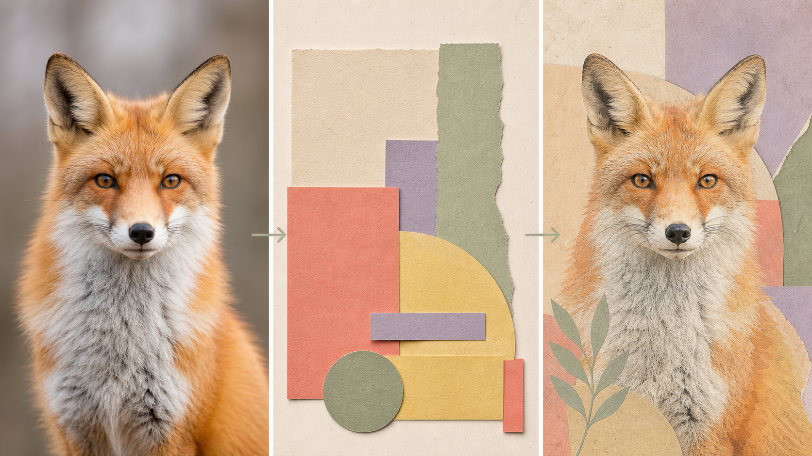
LoRA · Low-Rank Adaptation
75 / 93
Teach a small add-on instead of retraining everything
A large model contains millions or billions of adjustable weights. LoRA freezes them and learns a much smaller set of changes that can be attached when needed.
01
Freeze the base
Keep the original model’s learned weights unchanged.
→
02
Learn a shortcut
Store the new behavior using two small tables of adjustments.
→
03
Load the adapter
Attach those adjustments when a particular behavior or visual style is needed.
→
04
Choose strength
Control how strongly the small update influences the result.
LoRA in practice
76 / 93
One base model · several lightweight adapters
One model can load different learned behaviors
Each adapter stores a compact update. Loading a watercolor, paper-cut, or clay-like LoRA steers the same base model without replacing all of its original weights.
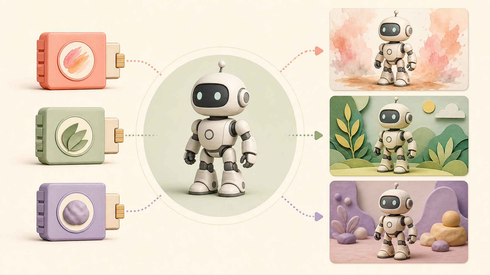
Reference or adapter?
77 / 93
One supplies evidence now; the other stores learned parameters
Both can guide style, but their setup and risks differ.
Reference conditioning
Use an image at generation time
Fast to change and does not require training a new module.
Adapter or LoRA
Learn a reusable behavior
Requires training examples and can be applied repeatedly.
Adapter strength
78 / 93
A learned style can overpower the task
Subtle influence → dominant influence
Low strength may barely affect the result. High strength may improve consistency but suppress prompt details or distort identity.
light touchstrong style
Strength is a creative control and a preservation risk.
IP-Adapter · image prompt conditioning
79 / 93
Two guidance lanes · one result
Words and a reference image can guide separately
The upper lane carries the written idea. The lower lane carries visual evidence such as palette and texture. Separate attention paths combine near the generator, so both signals can influence the fox poster.
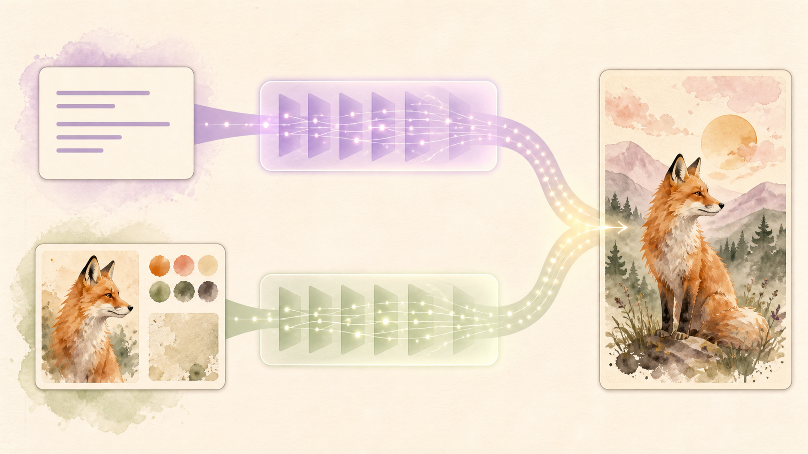
Module 9
80 / 93
Words and images can share a direction
Multimodal style alignment
Shared representations help relate language and visuals, while human art direction turns that relationship into a coherent project.
9
Multimodal embeddings · high-level view
81 / 93
Different media can occupy a related semantic space
Text and images can be compared by meaning and mood.
A calm description may align with soft light and muted color, while an energetic description may align with bold shapes and contrast.
A shared representation space
82 / 93
Nearby pairs communicate related ideas
Proximity can represent text–image alignment
Calm, energetic, and suspenseful message patterns cluster near visually compatible images, while a mismatched pair sits farther apart.
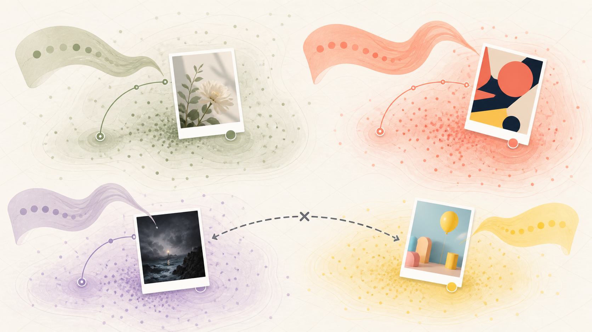
Alignment has more than one dimension
83 / 93
Correct objects do not guarantee the correct style
A generated image can contain every requested object and still communicate the wrong mood.
Content alignment
Are the requested subjects present?
Fox, forest, moon, and position may all be correct.
Style alignment
Does the experience match?
Bright playful colors may conflict with “quiet and mysterious.”
Build a shared style vocabulary
84 / 93
Connect language choices to visual choices
A multimodal direction becomes clearer when each abstract word has observable evidence.